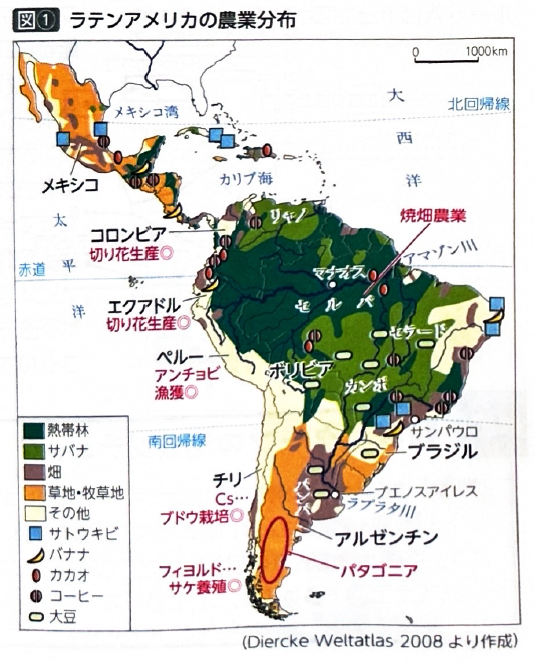
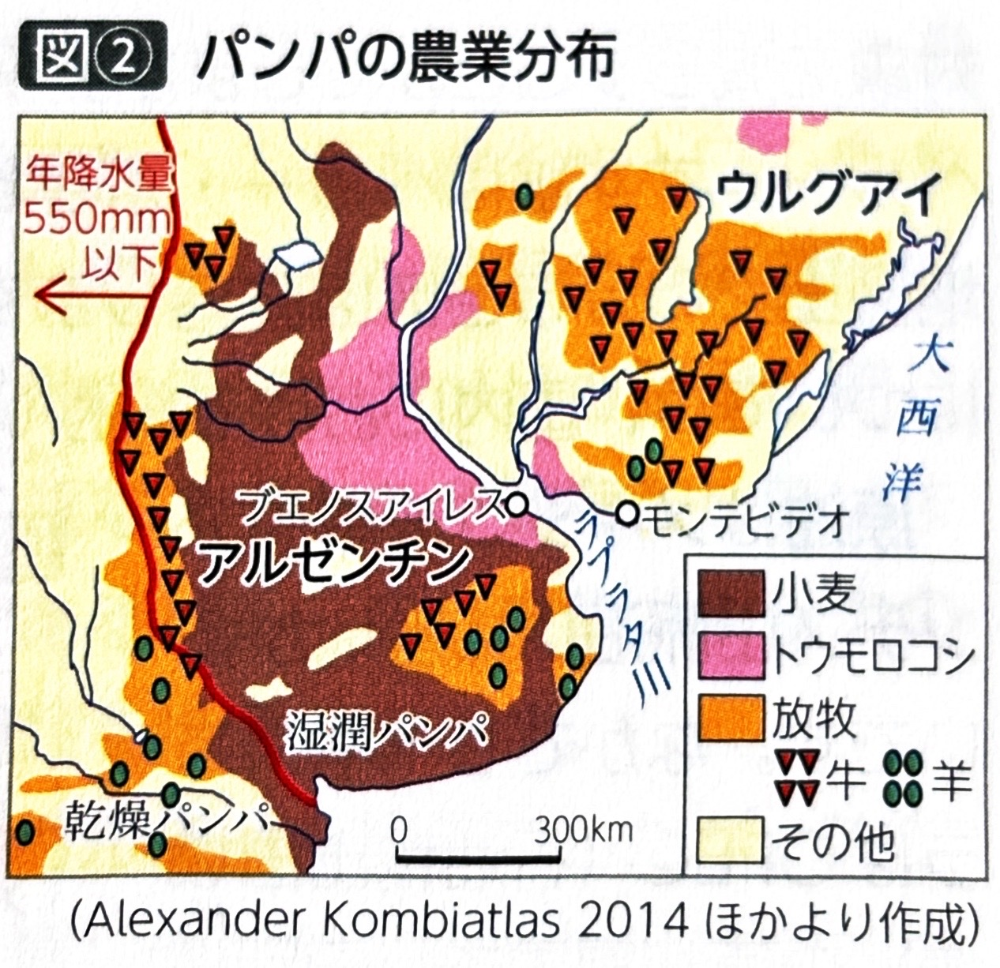
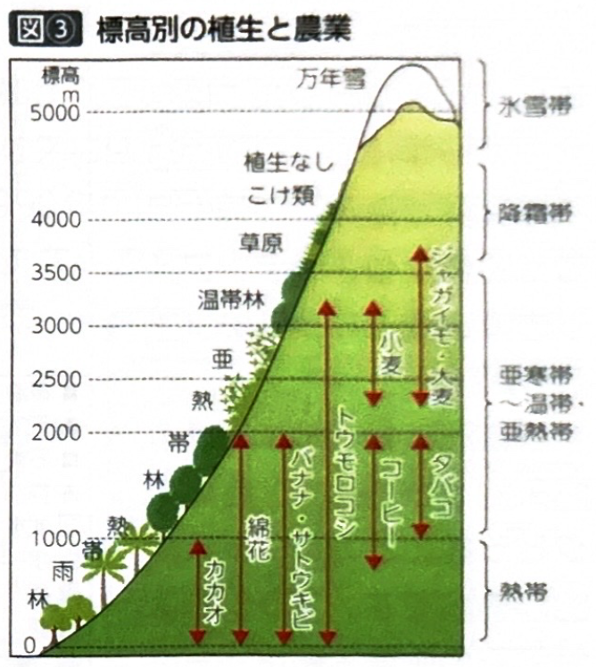
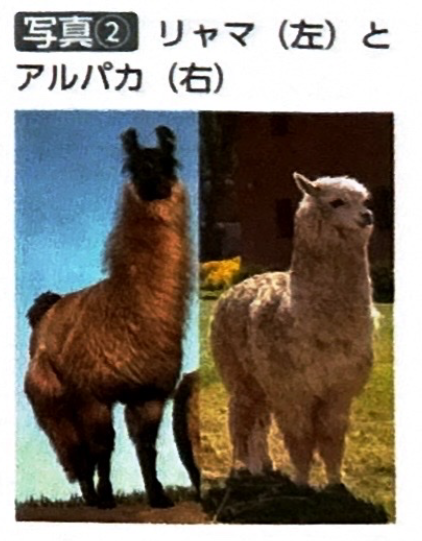
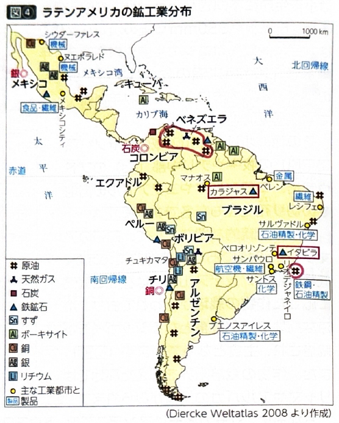
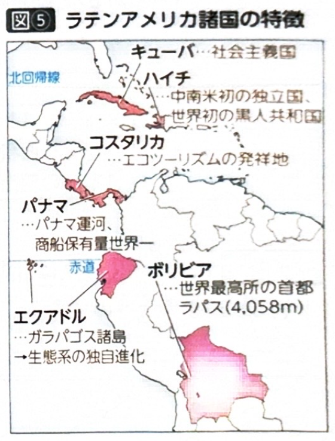
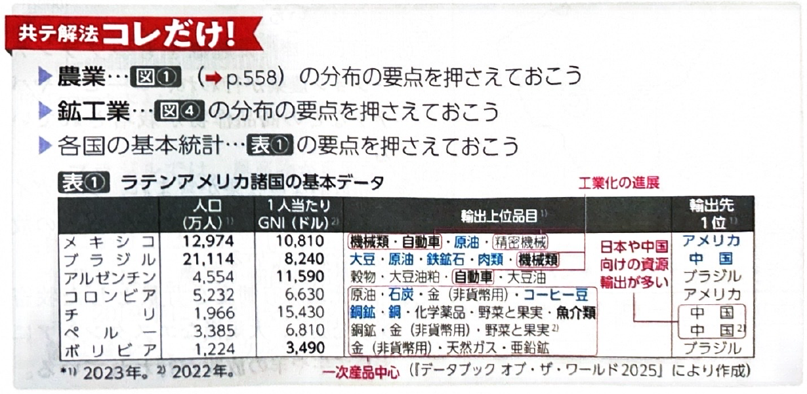

第8章 ラテンアメリカ - 産業
ポイント総復習
1. ラテンアメリカの農業と大土地所有制
ラテンアメリカでは、ヨーロッパから持ち込まれた大土地所有制が定着しており、少数の農場主と多くの労働者による階層構造が貧富の差を生み出しています。また、植民地時代から続く商品作物のプランテーション農業が盛んです。
| 国名・地域 | 大土地所有制の呼称 | 主な農産物・特徴 |
|---|---|---|
| ブラジル | ファゼンダ | かつてはコーヒー栽培が中心でしたが、近年は熱帯草原（カンポ・セラード）の開発が進み、世界有数の大豆生産地となっています。また、バイオエタノールの原料となるサトウキビも重要です。 |
| アルゼンチン | エスタンシア | 温帯草原（パンパ）を中心に、肉牛の放牧や小麦・トウモロコシの大規模栽培が行われています。 |
| その他の国々 | アシエンダ | エクアドルのバナナや、キューバなどのサトウキビなど、熱帯性の商品作物の栽培が盛んです。 |




2. ラテンアメリカの鉱産資源
アンデス山脈や安定陸塊の周辺には、世界的にも重要な鉱産資源が豊富に分布しています。国名と産出する資源の組み合わせがよく出題されます。
| 主な資源 | 主要な産出国と特徴 |
|---|---|
| 銅 | チリ（世界最大の生産・輸出国）。アンデス山脈沿いで大規模に採掘されます。 |
| 原油 | ベネズエラ。世界有数の埋蔵量を誇り、OPEC（石油輸出国機構）の原加盟国でもあります。 |
| 鉄鉱石 | ブラジル。アマゾン川流域のカラジャス鉄山などで産出され、日本や中国への輸出が盛んです。 |
| リチウム | ボリビア。ウユニ塩原周辺に豊富に埋蔵されており、電気自動車のバッテリー原料などとして近年注目を集めています。 |

3. 工業化と経済協定
かつてのモノカルチャー経済から脱却するため、各国は外資の導入や地域統合による工業化を進めています。
- メキシコの工業：アメリカ合衆国との国境地帯に「マキラドーラ」とよばれる輸出加工区を設け、安価な労働力を求めるアメリカや日本などの外国企業を誘致しました。これにより自動車工業などが大きく発達しました。現在はアメリカ・カナダとの間でUSMCA（米国・メキシコ・カナダ協定、旧NAFTA）を結んでいます。
- ブラジルの工業：かつてはコーヒー中心の経済でしたが、サンパウロやリオデジャネイロなどを中心に重工業や航空機工業が発達しました。また、豊富な水路を活かした水力発電が盛んで、サトウキビから作るバイオエタノールの利用も進んでいます。近年はBRICSの一国として存在感を高め、南米諸国の経済統合であるMERCOSUR（南米南部共同市場）の中心となっています。

4. 都市問題と人口の偏り
ラテンアメリカ諸国は都市人口率が非常に高い一方で、急激な人口流入による都市問題が深刻化しています。
- ファベーラ：ブラジルなどの大都市周辺に形成される、貧困層が暮らす劣悪な住環境のスラム（不良住宅地区）のことです。
- プライメートシティ（首位都市）：その国の中で人口が極端に集中している最大の都市のことです。ペルーのリマやメキシコのメキシコシティなどが該当し、過密による大気汚染や交通渋滞が深刻です。
- ブラジルの遷都：ブラジルでは、沿岸部の過密解消と内陸部開発を目的として、首都をリオデジャネイロから内陸に新設したブラジリアへ移転しました。

基礎問題（理解度チェック）
Q1. ラテンアメリカの大土地所有制について、空欄を埋めなさい。
ラテンアメリカではヨーロッパから持ち込まれた大土地所有制が定着している。この制度に基づく大農園は、国によって呼称が異なり、ブラジルでは「
」、アルゼンチンでは「
」、その他の国々では「
」とよばれる。
Q2. メキシコの工業について、空欄を埋めなさい。
メキシコでは、アメリカ合衆国との国境地帯に「
」とよばれる輸出加工区を設けた。ここに安価な労働力を求める外国企業が多数進出したことで、特に
工業などが大きく発達した。また、メキシコはアメリカ・カナダとの間で自由貿易を促進する
を結んでいる。
Q3. ラテンアメリカの鉱産資源について、空欄を埋めなさい。
アンデス山脈沿いに位置する
は、世界最大の
の生産・輸出国である。また、世界有数の原油埋蔵量を誇り、OPECの原加盟国でもあるのが
である。一方、ウユニ塩原周辺に豊富に埋蔵され、次世代の電池原料として注目されている資源は
である。
Q4. ブラジルの高原地帯に広がる熱帯草原（カンポ・セラード）では、20世紀後半に日本などの援助や欧米資本の進出を通じて大規模な農業開発が進められ、現在では世界有数の「大豆」生産地となっている。
Q5. ブラジルでは、国内に豊富に埋蔵されている原油や石炭を活かした火力発電が国内の発電量の大半を占めており、その潤沢な電力を利用して航空機工業などの重工業が発展した。